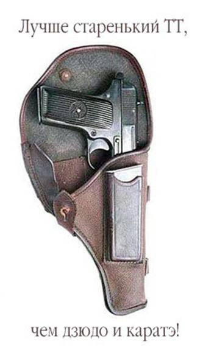

Оружейные тезисы
Пишет Arbat (американец, поэтому некоторые тезисы специфичны). Цитирую весь текст без кавычек.
Несколько бессистемно, но уж как вышло. Я постарался воздерживаться от цитирования статистик — надежных нету ни с той, ни с другой стороны. Спорить о том, почему в Британии так растет преступность, а в Америке так нет — в другом посте. Тут некоторые простые мысли. Не требующие.
Главная, центральная идея: право на жизнь означает также право на самооборону. Если моя жизнь принадлежит мне, то я имею право ее защищать. И жизнь других невинных людей тоже. Огнестрельное оружие необходимо для такой защиты. Изьятие оружия означает, что у человека фактически отнимают возможность реализовать право себя защитить. В той же мере, что изъятие бумаги, принтера, компьютера, интернетного подсоединения — нарушает право слова. Этой идеи должно быть, в принципе, достаточно, чтобы остановить покушения разоружителей. Тем не менее, более важно то, что эта идея — необходима. В Америке право на оружие живо только потому, что оно Конституционно признано. Иначе его бы давно съели. В России никакие другие уговоры не помогут снять запрет — если идея того, что самооборона это право, — не укоренится.
1. Правильное отношение к оружию — как к инструменту, необходимому в смертельно опасной ситуации. Как к огнетушителю. Наличие у человека огнетушителя не означает ни болезненной параноий, ни, тем более, того, что он мечтает о пожаре. Далее, можно рассчитывать на пожарных и полицию, но, тем не менее, до их приезда жизнь человека и его семьи зависит от того, есть ли у него средства борьбы с нештатной ситуацией, и умеет ли он ими пользоваться.
2. Оружие отнять у всех невозможно. Наркотики не отняли, выпивку не отняли, и оружие тоже отнять нельзя. Нельзя все у всех конфисковать и прекратить производство во всем мире. Будут делать подпольно. Сами подумайте — с технологической точки зрения, это очень нехитрый предмет. Револьвер изобрели в начале XIX века, пулемет в середине, полуавтоматический пистолет в конце. Самый популярный дизайн пистолета скоро будет отмечать свой столетний юбилей. Это не та технология, которая требует прецизионных станков с компьютерным контролем в тщательно вентилируемых комнатах. Это можно изготавливать там, где это делали 100 лет назад — в небольших мастерских, вручную. Качество будет похуже, но оружие останется. Как остался героин.
3. Единственное, что могут сделать анти-оружейные законы — это отнять оружие у законопослушных граждан. Иначе говоря, ухудшить ситуацию потенциальных жертв. Человека, который решил кого-то убить, запрет на использование пистолета не остановит. Его не остановит запрет на покупку. Его не остановит запрет на ношение. Его не остановит дополнительный запрет на ношение в школах. Добавьте, что, в Америке, на требование регистрации оружия бандит не просто наплюет, а оно вообще к нему легально неприменимо — просто потому, что для того, кто имеет нелегальный пистолет, регистрация означала бы донос на самого себя, а Пятая Поправка запрещает это требовать.
4. Предположим, что случилось поразительное чудо. Оружие таки отобрали у всех и, введя жесткий контроль за добычей и продажей всех металлов — остановили производство. Регулярные обыски пешеходов и домов, вертолетное прочесывание глухих районов, полный контроль всех багажников — отобрали таки. Преступника это не остановит. Преступник выбирает обстоятельства нападения. Нет пистолетов — будут нападать с ножами и палками, будут нападать группой, будут выбирать жертву послабее. Массовое убийство, как нам известно из здравого смысла и Израильского опыта с террористами — можно и на грузовике или автобусе исполнить. Оружие — это то, что дает критические дополнительные преимущества не преступнику, — но его жертве. Да, не всегда и не всякая жертва сумеет этим воспользоваться, однако, факт то, что оружие дает какой-то шанс там, где его нет без оружия. Добавьте, что сама возможность наличия оружия у жертвы — сдерживающий стимул для преступника.
5. Да, разумеется, наличие оружия означает, что есть возможность несчастных случаев. То же самое относится к автомобилям, кухонным ножам, топорам, бензину, водке, электрическим проводам в каждой квартире и многим, многим другим предметам. Однако, когда кто-то помирает от удара электротоком, или падает из окна, или кухонным ножом пыряет соседа, то мы не виним ножи, провода, окна и так далее. То, что кто-то может пролить бензин и спалить дом — не причина отнимать у всех людей возможность заправлять свои машины. Бороться с несчастными случаями надо как обычно — пропагандировать технику безопасности. Усилиями NRA и других оружейных организаций в США техника безопасности возведена в некоторый культ. Человек, который неаккуратно обращается с пистолетом, воспринимается не как мачо, а как идиот. Количество несчастных случаев идет на убыль, хотя количество оружия растет.
6. Карате и прочие восточные единоборства — надо потратить огромную кучу денег и времени на то, чтобы достичь разумного уровня. Представьте 120-килограммового бандита с ножом, накушавшегося какой-то дури до полной потери чувствительности к боли, — какого цвета пояс надо иметь в карате, чтобы отбиться без крупных ран? Черного-пречерного? С отливом в синеву? И заодно кунг-фу в стиле пьяного мастера — на случай, если бандит подстережет вас после вечеринки? А как быть беременным женщинам — или такой стиль кунг-фу тоже есть? Хотя, в целом, готов признать, что это все можно. Можно натренироваться. Вот только проблема в том, что все это карате — это ведь тоже оружие. Гораздо более дорогое, чем пистолет, требующее гораздо большей тренировки, гораздо менее надежное и применяемое на гораздо менее безопасной дистанции от бандита, но, в целом, — тоже оружие. Какой же смысл предлагать его вместо пистолета?
7. Собака, кстати, тоже оружие. Только со своим мозгом. «Ах, правильно воспитанная собака никогда не нападает на…» — погодите, кем правильно воспитаная? Мною? Человеком, которому, с вашей точки зрения, нельзя доверять кухонный нож оружие? Вы что, думаете, собачий мозг уменьшит неопределенность ситуации? Она поправит мои ошибки?
8. «Менее летальное» оружие: газовые баллончики, резиновые пули, связка ключей — все это замечательно, если вы готовы жертвовать тем, ради чего люди оружие имеют — обороной. Когда здоровый мужик пытается изнасиловать миниатюрную женщину — царапать его ключами бесполезно. Резиновая пуля имеет меньше шансов убить человека — но это также значит, что она имеет гораздо меньше шансов остановить бандита. Зато шансов, что выживет ребенок, по которому его дружок в шутку выстрелит из папиного резинострела — не особо больше, чем с обычной пулей.
Добавьте, что потенциальная «нелетальность» оружия означает, что оно будет применяться менее ответственно. Простая идея — если спор в баре перерос в драку, то есть шанс, что человеку с оружием придется защишать свою жизнь и стрелять. Если он кого-то убил, и при этом окажется, что он начал этот спор, или он способствовал его эскалации — это его ответственность. По свидетельствам тех, кто меня учил обращаться с пистолетом, человек с оружием скорее постарается разрешить кризисную ситуацию без конфликта.